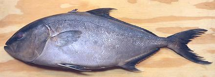

Greater Amberjack / Kanpachi

[Allied Kingfish, Great Amberfish, Greater Yellowtail, Jenny Lind, Sea Donkey,
Reef Donkey; Kanpachi (Japan); Seriola dumerili of family
Carangidae (Jacks and Pompanos)]
This fish is found in tropical and subtropical regions around the world,
but rarely east of Hawaii in the Pacific. It can grow to about 6 feet and
178 pounds, but is commonly about 3-1/4 feet. In Japan, fish up to about 36
inches long are preferred for sushi and sashimi. The photo specimen was 20
inches long and weighed 3.6 pounds factory cleaned. It is now farmed to a
growing extent, but requires protein and lipids from other fish, so viability
of farming is in question. IUCN Red List LC (Least Concern).
More on Jacks and Trevally.
Flesh of this fish is of light color, with a deep strip of very
dark meat down the centerline, but this dark meat doesn't differ
greatly from the lighter flesh in taste or oiliness. It's taste is
lighter than Yellowtail or Japanese Amberjack.
While raw Kanpachi is very popular in sushi bars, it is also
very fine cooked. The flesh becomes quite firm when baked, steamed
or poached, but is easily broken into large flakes. It holds together
well enough for fish stews.
Buying:
I have found these in Philippine markets here
in Los Angeles, California. In season they can be relatively economical.
I bought the photo specimen for 2022 US $2.99/pound.
Scales:
These are tiny. but adhere fairly well, so they
fly around a lot when scaling.
Cleaning:
The main problem here is size. There are
a lot of membranes and such that are not easy to pull out without
using your long nose pliers. Be sure to scrape through the long swim
bladder and scrape off the blood works above it. Use kitchen shears
to cut both ends of the gills to make them easier to pull out.
Filleting:
This fish is very easy to fillet. When you
get down to the rib cage don't bother trying to follow the bones with
your knife. Just use kitchen shears to cut the ribs from the backbone
and pull them from the fillets with your long nose pliers. They pull
fairly easily and take little flesh. The skirt is thick and meaty on
these fish.
There are substantial centerline spines for the front half of the
fish. They are easy to find - just pull them out straight forward.
Yield:
A 3.6 pound fish yielded 1 pound 15 ounces of
skin-on fillet (53%). Skin off would be about (48%). This fish can be
used skin-on.
Skin:
The skin has little shrink when fried and will distort
a fillet very mildly if fried first on the skinless side. Poached, there
will be significant shrinkage, but this will flatten out almost entirely
when the fillet is completely cooked. For Baking or steaming a full fillet,
you should make a few diagonal cuts just through the skin for better
appearance. Skin flavor is unobtrusive. Skinning fillets is quite easy,
but for so large a fish it is best to split them along the centerline,
even if you knife is long enough for the full width.
Stock:
The head, bones and fins make a very serviceable
nearly clear stock of medium flavor. There is a moderate amount of oil
which should be removed before us (use your gravy separator). For details
see our Fish Stock page.
sf_kanpacz 221121 - www.clovegarden.com
©Andrew Grygus - agryg@clovegarden.com - Photos
on this page not otherwise credited © cg1
- Linking to and non-commercial use of this page permitted